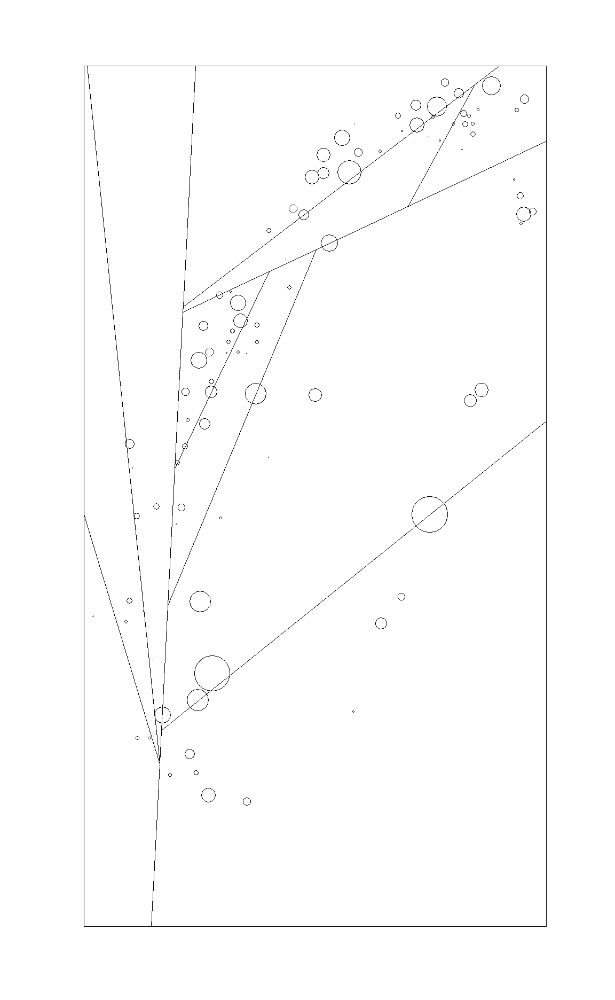
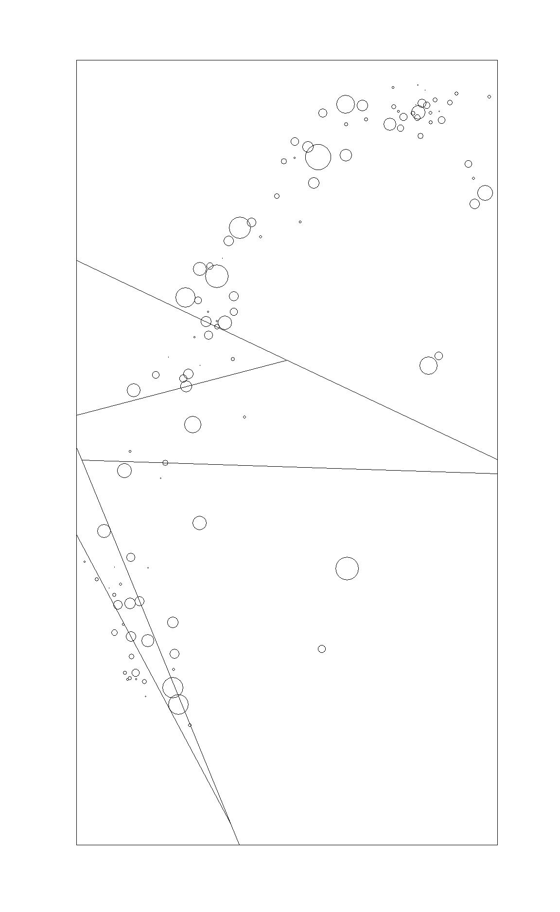
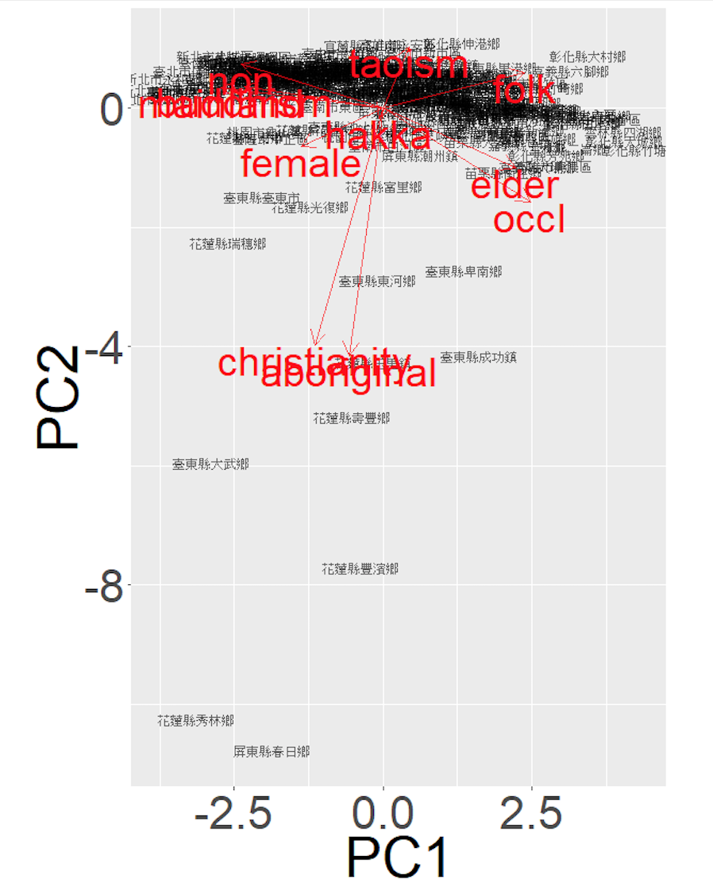
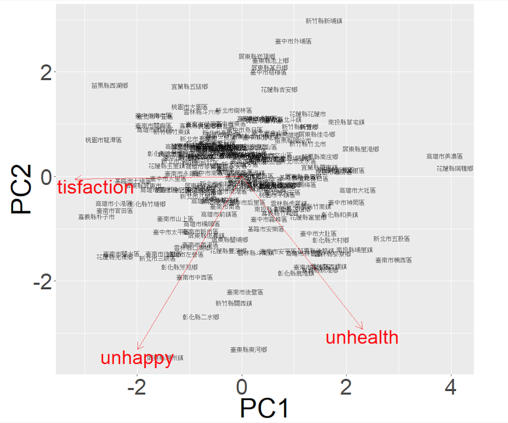
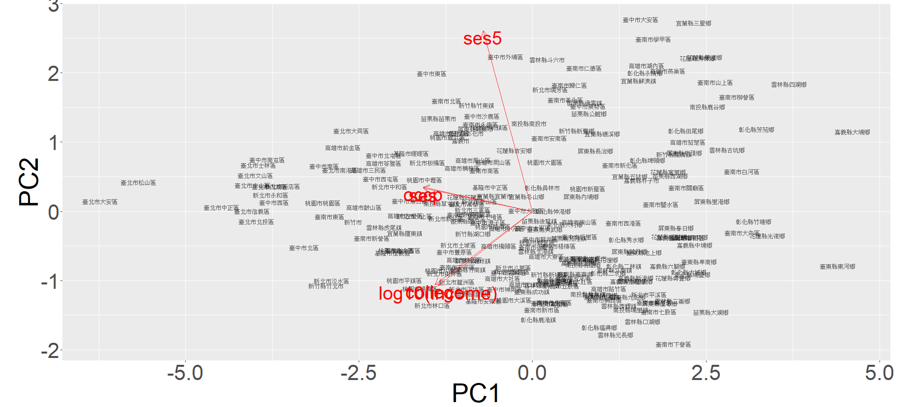

南部人跟誰同一國？ 用「機器學習法」理梳台灣社會變遷資料中的區位差異 中央研究院 社會學研究所 江彥生、李宗棠
大綱
- 前言
- 台灣社會科學區域劃分的研究現況
- 資料與方法
- 分析結果
- 結論-空間分群的優勢與侷限
前言
臺灣的區域劃分
四分類 – 行政院國發會都市及住宅發展處所擬訂之「臺灣地區綜合開發計畫」 – 交通部中央氣象局
六分類 – 日治時期的五州三廳制演變而來
二大分區 – 政治地理分界
區域劃分的依據
- 行政院國發會「臺灣地區綜合開發計畫」的官方劃分方式，在1979制定後沒有再更動過 此劃分之南部區域包含嘉義市、嘉義縣、臺南市、高雄市、屏東縣、澎湖縣

台灣社會科學區域劃分的研究現況
研究類型
城鄉發展
– 羅啟宏(1992)：臺灣省鄉鎮發展類型之研究
– 劉介宇、洪永泰、莊義利、陳怡如、翁文舜、劉季鑫、梁賡義(2006)：臺灣地區鄉鎮市區發展類型
– 侯佩君、杜素豪、廖培珊、洪永泰、章英華(2008)：臺灣鄉鎮市區類型之研究
數位發展
– 行政院研究發展委員會編印(2012)鄉鎮市區數位發展分類研究報告
區域分類的目的與方法
目的：找出相似的地區
方法：通常採用較為泛用群聚分析
Clustering Analysis
– 羅啟宏（1992）、劉介宇等（2006）、侯佩君等（2008）
Latent Profile Analysis
– 行政院研究發展委員會編印（2012）
– Model-based Approach
資料與方法
資料
台灣社會變遷資料
– 優點：不會有人口、區域代表性的問題
– 缺點：能使用特徵有限，無法選擇社會學家關心的個人變項
合併社會變遷2000-2016內的所有資料，共35次調查
變項測量
人口學變項
一級產業、客家人、外省人、原住民、老年人(65)、佛教徒、基督徒(及天主教徒)、民間信仰、無信仰、道教徒、女性
社會階層
大學畢業、職業聲望（OCCP）、社會經濟地位（SES）、五等社會經濟地位
生活狀況
健康、生活滿意度、快樂：因各期調查題目測量尺度不一，經整理後三種生活狀況中勾選負面表述者（如不太快樂、很不滿意、不健康），編碼為1；其餘選項者編碼0
分群策略
官方分群
– 行政院國發會訂定之台灣四個區域
群聚分析 (clustering analysis)：K means 演算法
– Unsupervised Learning
– 資料簡化：以少數的資料點來代表大量的資料，達到資料壓縮的功能
– 資料分類：以少數點來代表特定類別的資料，降低資料量及計算量，並可以減少資料中雜訊的影響
Spatial Oblique Decision Tree
– Supervised Learning
– Spatial partitioning
– 優化區域劃分的分界線：傳染病擴散、生態區域等
群聚分析 (Clustering Analysis)
K-Means Clustering
－ 計算每一個行政區間的距離矩陣(Euclidean Distance) － Silhouette Coefficient找出最佳的K群分群數 － 以演算法找出適當的類別，使得類別內變異量相加有最小值
Spatial Oblique Decision Tree
CART(classification and regression tree)的變形
函數形式：
\[z_i=f(x_i,y_i)+\epsilon_i\]
\[z_i:outcome\ variable\ \ \ \ {x_i,y_i}: planar\ coordinates\ of\ each\ point\ location\ M_i\ ,\ i = 1...N\]
\[f(x_i,y_i)可以表示為:\ \sum_{j=1}^{P}\overline{z_j} \big\{M_i(x_i,y_i) \in class_j\big\}\] \[class_j:for\ j = 1, ...P, are\ the\ final\ P\ classes\ after\ splitting\ the\ whole\ study\ area\]
Spatial Oblique Decision Tree 切割後的結果
 
分析結果
Demography PCA & Life status PCA
 
MAP
Demography
PCA1為+，屬於第一級產業、老人、民間信仰的群體。PCA1為-，外省人、佛教、無宗教教信仰。 PCA2為-，屬於原住民、基督(天主)教徒的群體。
Social Stratification
PCA1為-，屬於上大學比例高、收入、職業聲望以及社經地位皆較高的群體。
Life status
PCA1+，不滿意度越低；PCA1-，不滿意度高。 PCA2為-，屬於不健康或不快樂程度較高的群體。
結論
空間分群的優勢與侷限
空間分群 v.s. 集群分析
以核心變項(characteristic, attitude, behavior…等)進行區域及空間的探索
– 分群
– 南北差異(東西差異)
– 重新劃界
限制
– 調查資料很難覆蓋全台灣
– 哪些特徵適合使用空間分群?(那些特徵能夠反應在空間上)
– 機器學習的結果不容易解釋
Social Stratification PCA
